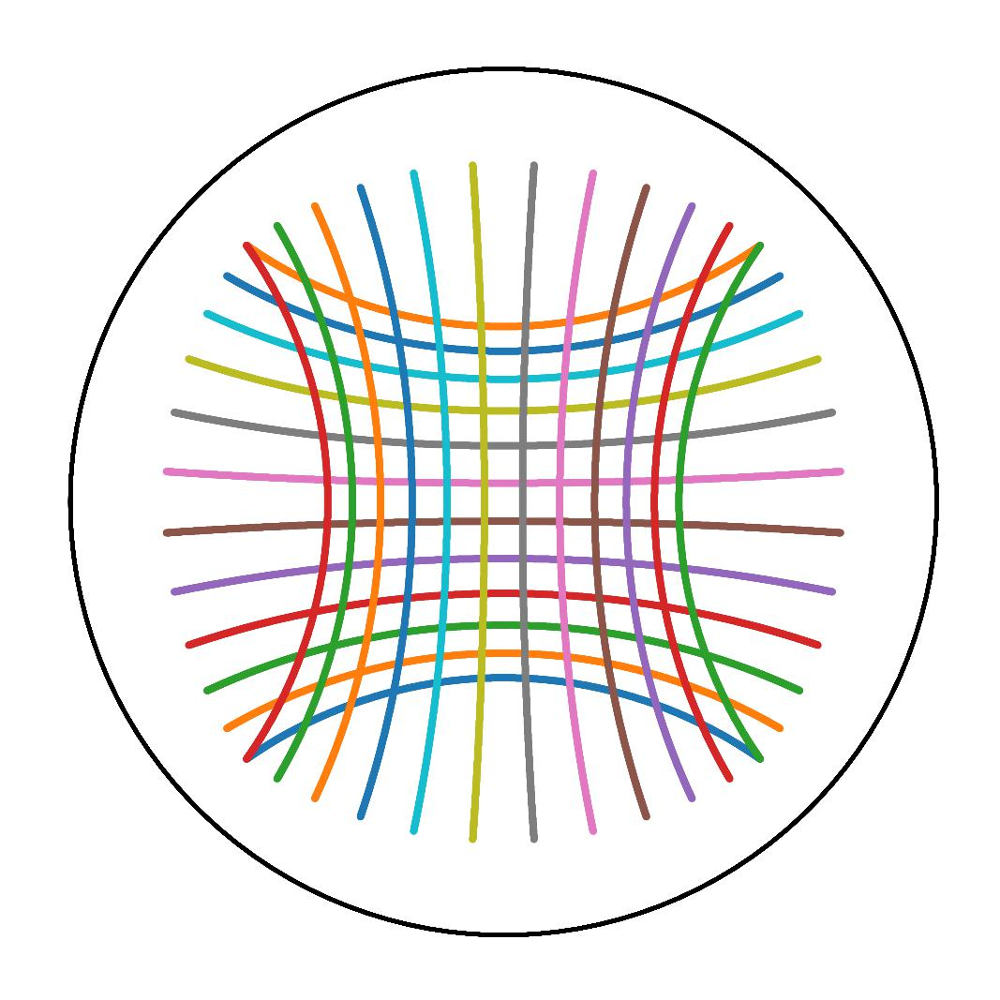

Geomstats#
{kind=link}
Geomstats is an open-source Python package for computations, statistics, and machine learning on nonlinear manifolds. Data from many application fields are elements of manifolds. For instance, the manifold of 3D rotations SO(3) naturally appears when performing statistical learning on articulated objects like the human spine or robotics arms. Likewise, shape spaces modeling biological shapes or other natural shapes are manifolds. Additional examples are introduced in Geomstats paper. Geomstats’ source code is freely available on GitHub.
Figure: Shapes in natural sciences can be represented as data points on “manifolds”. Images credits: Self Reflected, Greg Dunn Neuro Art, British Art Foundation, Ashok Prasad, Matematik Dunyasi, Gabriel Pérez.#
Computations and statistics on manifolds require special tools of differential geometry. Computing the mean of two rotation matrices \(R_1, R_2\) as \(\frac{R_1 + R_2}{2}\) does not generally give a rotation matrix. Statistics for data on manifolds need to be extended to “geometric statistics” to perform consistent operations.
Objectives#
Geomstats is here to fulfill four objectives:
provide educational support to learn “hands-on” differential geometry and geometric statistics, through its examples and visualizations.
foster research in differential geometry and geometric statistics by providing operations on manifolds to gain intuition on results of a research paper;
democratize the use of geometric statistics by implementing user-friendly geometric learning algorithms using Scikit-Learn API; and
provide a platform to share learning algorithms on manifolds.
Design#
Geomstats is organized into two main modules: geometry and learning.
The module geometry implements concepts from differential geometry, such as manifolds and Riemannian metrics. The module learning implements statistics and learning algorithms for data on manifolds, such as supervised and unsupervised learning techniques.
Figure: Parallel transport of a vector X (pink) along a geodesic (green) on the manifold M, e.g. representing a deformation’s force acting on the time evolution of an organ shape. Image credits: Adele Myers.#
The code is object-oriented and follows Scikit-Learn’s API. The operations are vectorized for batch computation and provide support for different execution backends — namely NumPy, PyTorch and Autograd.
Learn More#
To learn how to use geomstats, visit First steps. To contribute to geomstats visit Contributing Guide. To learn more about differential geometry and manifolds, visit Explanation. To find more advanced examples, visit Tutorials.